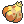
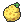

果園與樹果
地點
真新鎮：你家屋後（北側）有 8 塊鬆軟土圃。打倒小剛的道館（灰色徽章）後開放。
步驟
1. 種植：站在空的土圃上，按 A（或點擊），從包包裡選一顆樹果。可種植 43 種樹果。
2. 照料：隊伍中帶上一隻草屬性寶可夢。照料之後，種子開始成長：萌芽 -> 成長 -> 開花。
3. 澆水：使用隊伍中的水屬性寶可夢。照料之後的任何時間都可以。沒有澆水 = 植株會停在開花。
4. 採收：結了果實的樹可以採。果實不會枯萎，不必急。採收後土圃會再次變空。
小提醒
你的庭園只屬於你：其他玩家看不到，也不能採你的植物。
第一次整理庭園時還沒有草屬性或水屬性寶可夢？在你的第一座庭園裡，小剛的寶可夢會幫每個土圃一次。
採收的就是你種下的同一種樹果（數量：見成長時間與採收）。
所有可種植的樹果
| 樹果 | 品級 | 成長時間 | 產量 | 吸引 |
|---|---|---|---|---|
 墨莓果 墨莓果 | 常見 | 8 小時 | 2-4 |    |
 蕉香果 蕉香果 | 常見 | 8 小時 | 2-4 | |
| 凰梨果 | 常見 | 8 小時 | 2-4 | |
 蔓莓果 蔓莓果 | 常見 | 8 小時 | 2-4 | |
| 西梨果 | 常見 | 8 小時 | 2-4 | |
| 樂芭果 | 少見 | 20 小時 | 2-3 |    |
 利木果 利木果 | 少見 | 20 小時 | 2-3 |      |
| 櫻子果 | 少見 | 20 小時 | 2-3 | |
| 零餘果 | 少見 | 20 小時 | 2-3 | |
 勿花果 勿花果 | 少見 | 20 小時 | 2-3 | |
 芭亞果 | 少見 | 20 小時 | 2-3 | |
 蘋野果 蘋野果 | 少見 | 20 小時 | 2-3 | |
| 芒芒果 | 少見 | 20 小時 | 2-3 | |
| 橙橙果 | 少見 | 20 小時 | 2-3 | |
 桃桃果 桃桃果 | 少見 | 20 小時 | 2-3 | |
| 柿仔果 | 少見 | 20 小時 | 2-3 | |
| 莓莓果 | 少見 | 20 小時 | 2-3 | |
| 異奇果 | 少見 | 20 小時 | 2-3 | |
| 玉黍果 | 稀有 | 24 小時 | 2-3 |    |
 岳竹果 岳竹果 | 稀有 | 24 小時 | 2-3 | |
| 檬檸果 | 稀有 | 24 小時 | 2-3 | |
| 茸丹果 | 稀有 | 24 小時 | 2-3 | |
| 萄葡果 | 少見 | 32 小時 | 2-3 |    |
| 哈密果 | 少見 | 32 小時 | 2-3 | |
| 藻根果 | 少見 | 32 小時 | 2-3 | |
| 榴石果 | 少見 | 32 小時 | 2-3 | |
| 比巴果 | 少見 | 32 小時 | 2-3 | |
 文柚果 | 稀有 | 32 小時 | 2-3 |   |
| 茄番果 | 少見 | 32 小時 | 2-3 | |
| 木子果 | 稀有 | 48 小時 | 2-3 | |
 靛莓果 靛莓果 | 極稀有 | 60 小時 | 1-3 |  |
 金枕果 金枕果 | 極稀有 | 60 小時 | 1-3 | |
| 椰木果 | 極稀有 | 60 小時 | 1-3 | |
 刺角果 刺角果 | 極稀有 | 60 小時 | 1-3 | |
 瓜西果 瓜西果 | 極稀有 | 60 小時 | 1-3 | |
 杏仔果 杏仔果 | 傳說 | 72 小時 | 1-2 |    |
 謎芝果 謎芝果 | 傳說 | 72 小時 | 1-2 | |
 龍睛果 龍睛果 | 傳說 | 72 小時 | 1-2 | |
 蘭薩果 蘭薩果 | 傳說 | 72 小時 | 1-2 | |
 枝荔果 枝荔果 | 傳說 | 72 小時 | 1-2 | |
| 龍火果 | 傳說 | 72 小時 | 1-2 | |
 沙鱗果 沙鱗果 | 傳說 | 72 小時 | 1-2 | |
 星桃果 星桃果 | 傳說 | 72 小時 | 1-2 | |
真實時間
成長使用真實時間，並由伺服器計算：離線或關閉遊戲時，植物仍會繼續成長。調整手機時鐘並不會加速。
以下時間從照料起算直到結果，並平均分成萌芽、成長與開花。
請在植株超過成長時間的 2/3 之前澆水，才不會太晚。若較晚澆水，果實會在澆水後、再經過成長時間的 1/3 時出現。
普通品級 - 採收 2-4 顆果實
蔓莓果、墨莓果、蕉香果、西梨果、凰梨果：8 小時（持有彩虹徽章：5 小時 36 分）
少見品級 - 採收 2-3 顆果實
櫻子果、零餘果、桃桃果、莓莓果、利木果、柿仔果、橙橙果、蘋野果、勿花果、異奇果、芒芒果、樂芭果、芭亞果：20 小時（持有彩虹徽章：14 小時）
榴石果、藻根果、比巴果、哈密果、萄葡果、茄番果：32 小時（持有彩虹徽章：22 小時 24 分）
稀有品級 - 採收 2-3 顆果實
玉黍果、岳竹果、茸丹果、檬檸果：24 小時（持有彩虹徽章：16 小時 48 分）
文柚果：32 小時（持有彩虹徽章：22 小時 24 分）
木子果：48 小時（持有彩虹徽章：33 小時 36 分）
極稀有品級 - 採收 1-3 顆果實
刺角果、椰木果、瓜西果、金枕果、靛莓果：60 小時（持有彩虹徽章：42 小時）
傳說品級 - 採收 1-2 顆果實
枝荔果、龍睛果、沙鱗果、龍火果、杏仔果、蘭薩果、星桃果、謎芝果：72 小時（持有彩虹徽章：50 小時 24 分）
食物（飢餓）
出戰中的寶可夢會慢慢肚子餓：飽食度（0-100）每分鐘下降 4 點，戰鬥中加快 1.5x。
在 40 以下時，牠頭上會出現樹果泡泡。點泡泡／寶可夢，或按 F：會打開小型樹果選擇器（上次的樹果排在最前，點兩下 = 再餵一次）。
非常飢餓（15 以下）：泡泡出現得更頻繁，且 SP 回復減慢 50%。你可以自己餵到牠吃飽；自動餵食最多只到 85。
各品級增加的飽食度：普通 +30、少見 +40、稀有 +60、極稀有 +80。傳說樹果不能當作食物。
包包：選一顆樹果 > 餵食 > 選一隻寶可夢（候補的也可以）。
樹果加成（全隊，PvE）
蔓莓果：招式傷害 +3%（15 分鐘）
墨莓果：EXP +5%（15 分鐘）
蕉香果：普通攻擊傷害 +8%（15 分鐘）
西梨果：戰鬥金錢 +10%（15 分鐘）
凰梨果：道具掉落 +10%（15 分鐘）
櫻子果：火屬性招式傷害 +10%（20 分鐘）
零餘果：水屬性招式傷害 +10%（20 分鐘）
桃桃果：電屬性招式傷害 +10%（20 分鐘）
莓莓果：草屬性招式傷害 +10%（20 分鐘）
利木果：冰屬性招式傷害 +10%（20 分鐘）
蘋野果：格鬥屬性招式傷害 +10%（20 分鐘）
橙橙果：毒屬性招式傷害 +10%（20 分鐘）
柿仔果：地面屬性招式傷害 +10%（20 分鐘）
勿花果：蟲屬性招式傷害 +10%（20 分鐘）
異奇果：岩石屬性招式傷害 +10%（20 分鐘）
芒芒果：幽靈屬性招式傷害 +10%（20 分鐘）
樂芭果：龍屬性招式傷害 +10%（20 分鐘）
芭亞果：惡屬性招式傷害 +10%（20 分鐘）
萄葡果：飛行屬性招式傷害 +10%（20 分鐘）
茄番果：超能力屬性招式傷害 +10%（20 分鐘）
榴石果：鋼屬性招式傷害 +10%（20 分鐘）
藻根果：一般屬性招式傷害 +10%（20 分鐘）
比巴果：ASPD（普通攻擊速度）+5%（20 分鐘）
哈密果：普通攻擊每次命中 SP +1（20 分鐘）
玉黍果：EXP +10%（30 分鐘）
岳竹果：招式 SP 消耗 -10%（30 分鐘）
茸丹果：CRIT +3%（30 分鐘）
檬檸果：招式冷卻 -10%（30 分鐘）
木子果：普通攻擊傷害 +20%（30 分鐘）
文柚果：普通攻擊傷害的 HP 吸取 +2%（30 分鐘）
刺角果：招式傷害 +10%（60 分鐘）
瓜西果：EXP +20%（60 分鐘）
椰木果：道具掉落 +20%（60 分鐘）
靛莓果：CRIT +10%（60 分鐘）
金枕果：受到的傷害 -8%（60 分鐘）
一次只能有一種增益（介面上會顯示圖示和剩餘時間）。再餵同一種樹果 = 延長時間（最多 2x）。如果是你自己改餵另一種樹果 = 會先問要不要換掉現在的增益；自動餵食絕不會換掉較高等級的增益（所有屬性增益等級都一樣）。屬性增益只對該屬性的招式有效（普通攻擊沒有屬性）。在 PVP、LMS、WOP 中不會生效。EXP、金錢和掉落由伺服器計算（掛機和共用的野生寶可夢也算）。CRIT 最高是 100%。
從背包使用時的效果（戰鬥／回復）
蔓莓果：只能當食物
墨莓果：只能當食物
蕉香果：只能當食物
西梨果：只能當食物
凰梨果：只能當食物
櫻子果：治療麻痺
零餘果：治療睡眠
桃桃果：治療中毒和劇毒
莓莓果：治療灼傷
利木果：治療冰凍
柿仔果：治療混亂
橙橙果：+10 HP
蘋野果：+10 SP
勿花果：回復最大 HP 的 12.5%
異奇果：回復最大 HP 的 12.5%
芒芒果：回復最大 HP 的 12.5%
樂芭果：回復最大 HP 的 12.5%
芭亞果：回復最大 HP 的 12.5%
榴石果：提升友好度
藻根果：提升友好度
比巴果：提升友好度
哈密果：提升友好度
萄葡果：提升友好度
茄番果：提升友好度
玉黍果：只能當食物
岳竹果：只能當食物
茸丹果：只能當食物
檬檸果：只能當食物
文柚果：+30 HP
木子果：治療所有異常狀態和混亂
刺角果：只能當食物
椰木果：只能當食物
瓜西果：只能當食物
金枕果：只能當食物
靛莓果：只能當食物
傳說 IV 樹果
枝荔果：+1 IV 攻擊
龍睛果：+1 IV 防禦
沙鱗果：+1 IV 速度
龍火果：+1 IV 特攻
杏仔果：+1 IV 特防
蘭薩果：要害傷害永久 +0.04
星桃果：+1 IV HP
謎芝果：要害機率永久 +1%
每顆果實讓 IV +1，每隻寶可夢每一項能力最多 5 顆，而且 IV 不能超過 31。
謎芝果：每顆果實要害機率 +1%，每隻寶可夢最多 25 顆。要害機率加起來的上限是 100%（PVP、LMS、WOP：50%）。
蘭薩果：每顆果實的要害傷害倍率 +0.04，每隻寶可夢最多 5 顆（招式 x2 -> x2.2，普通攻擊 x1.5 -> x1.7）。
到寶可夢檔案的 STAT 頁查看 IV 和 CRIT。傳說樹果絕不會被自動吃掉。
寶可夢不能攜帶樹果。以前攜帶過的樹果，已經退回背包。
果園
種下一顆樹果，就能收到好幾顆一樣的樹果（見生長時間與收成）。
友好商店
商店有賣（便宜的食物樹果，每間友好商店都有）：
蔓莓果：每間友好商店
野生寶可夢
橙橙果（5%）：綠毛蟲、鐵甲蛹、波波、小拉達、皮卡丘、喇叭芽、呆殼獸、飛天螳螂、凱羅斯、大尾立、芭瓢蟲、安瓢蟲、電燈怪、瑪力露麗、毽子花、向日花怪、沼王、黑暗鴉、果然翁、榛果球、土龍弟弟、壺壺、赫拉克羅斯、圈圈熊、太陽珊瑚、章魚桶、巨翅飛魚、頓甲、大奶罐、幼基拉斯、遠古巨蜓
桃桃果（5%）：獨角蟲、鐵殼蛹、超音蝠、走路草、毛球、圓絲蛛、阿利多斯、千針魚
零餘果（5%）：咕咕、貓頭夜鷹、夢妖
櫻子果（5%）：茸茸羊
柿仔果（5%）：麒麟奇、驚角鹿
利木果（5%）：狃拉、小山豬、長毛豬、信使鳥、瑪狃拉
超過每日上限的貴重掉落，會改成橙橙果。
活動
稀有、極稀有和傳說（IV）樹果，可以從世界頭目、最後存活和寶可夢戰爭的獎勵拿到。伺服器每次活動只擲一次：名次越高機率越好，一般參加者也還是可能拿到一顆（每次活動最多 1 顆樹果獎勵）。
世界頭目金級：傳說 1%、極稀有 15%、稀有 40% x2
世界頭目銀級：傳說 0.25%、極稀有 5%、稀有 20%
世界頭目銅級：傳說 0.05%、極稀有 1.5%、稀有 8%
LMS 優勝：傳說 2%、極稀有 25%、稀有 50% x2
LMS 第 2-3 名：傳說 0.5%、極稀有 10%、稀有 35%
LMS 第 4-10 名：傳說 0.1%、極稀有 3%、稀有 15%
LMS 其他玩家：傳說 0.02%、極稀有 0.8%、稀有 5%
WOP 獲勝公會：傳說 1%、極稀有 15%、稀有 40% x2
WOP 傷害貢獻前段（前 20% 傷害）：傳說 0.4%、極稀有 6%、稀有 25%
WOP 其他玩家：傳說 0.05%、極稀有 1.5%、稀有 8%
從活動拿到的傳說樹果會帶星號（EVENT）：可以吃，也可以 PLANTED（收成是 HARVEST 堆疊），還能在交易所出售或拿去交換（對方得到的是 BOUGHT 堆疊）。
交換
其他玩家可以用交換把樹果寄來。每日可收的上限：20 顆樹果，以及 3 顆傳說 IV 樹果（詳見交換與交易所）。
什麼時候出現
打贏小剛的道館（灰色徽章）之後，武藏、小次郎和喵喵（火箭隊）就會開始出現在你附近。如果跳過了劇情，他們就不會出現。
可打可不打：他們就站在那裡，頭上有一個「！」。走過去對話（動作鍵）就能打。不理他們的話，2 分鐘後會自己離開；換地圖、另開一場戰鬥，或走得太遠，也會讓他們消失。只有你看得到他們。
只會出現在有野生寶可夢的戶外地圖（道路、森林、草地等），不會出現在城鎮、室內、道館或洞窟。
稀有：距離上次遇到已經玩了 5 小時 30 分鐘之後，每 30 秒有 1.67% 的機率。在戶外玩，平均大約每 6 小時一次。
自動戰鬥開著的時候、掛機模式中，或是你有 2 分鐘以上沒有點畫面、也沒有按任何鍵，他們就不會出現。等待的時間會留著：等你再開始玩，他們很快就可能出現。
戰鬥與獎勵
第一次要先聽他們的口號（過一下會出現 SKIP 鍵：按兩次）；之後口號會自動跳過（設定 > 火箭隊口號 = SHOW，就能再看一次）。然後先打武藏，再打小次郎。他們的等級會跟著你的下一座道館，以及隊伍的等級。
勝利 = 賞金（跟訓練家一樣）。火箭隊不會給樹果：稀有和更好的樹果，現在改從世界頭目、LMS 和 WOP 來（哪裡取得樹果 > 活動）。
長得更快
打贏莉佳的道館（彩虹徽章）之後，莉佳會在你的果園留下一隻臭臭花：所有植物都會快上 30%。
照料完馬上澆水（可以一次做完），就不會澆晚。
玩的時候種長得快的樹果（蔓莓果、墨莓果、蕉香果……），睡覺前再種長得慢的（稀有、傳說）：離線也會繼續長。
果樹會吸引寶可夢
結了果的樹，會在你靠近時吸引野生寶可夢（12 格）：每 45-90 秒有 50% 的機率。
櫻子果、零餘果、桃桃果、莓莓果、利木果、蘋野果、橙橙果、柿仔果：皮卡丘、皮皮、胖丁、喵喵、伊布
勿花果、異奇果、芒芒果、樂芭果、芭亞果：猴怪、大舌頭、魔牆人偶
蔓莓果、墨莓果、蕉香果、西梨果、凰梨果：走路草、派拉斯、喇叭芽、蛋蛋
榴石果、藻根果、比巴果、哈密果、萄葡果、茄番果：大蔥鴨、袋獸、肯泰羅
玉黍果、岳竹果、茸丹果、檬檸果：蔓藤怪、飛天螳螂、凱羅斯
木子果、文柚果：吉利蛋、伊布、卡比獸
刺角果、椰木果、瓜西果、金枕果、靛莓果：百變怪、卡比獸、迷你龍
枝荔果、龍睛果、沙鱗果、龍火果、杏仔果、蘭薩果、星桃果、謎芝果：拉普拉斯、多邊獸、化石翼龍
自動餵食
按住自動戰鬥鍵，就能打開自動用藥的設定，再把自動餵食打開。
「餵食門檻」：出戰中的寶可夢，飽食度低於這個數值時會吃到一顆樹果（10-80%，預設 30%）。每 5 秒一顆。
「最便宜」這個選項只會用常見和少見等級的樹果。較高等級只有在你自己指定那顆樹果時才會用，傳說樹果絕不會被自動吃掉。